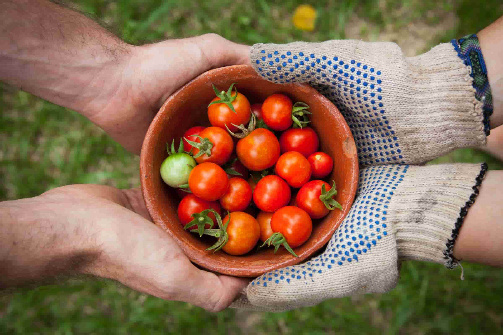

1. Connect with Others
Good relationships are important for your mental wellbeing. They can:
- help you to build a sense of belonging and self-worth
- give you an opportunity to share positive experiences
- provide emotional support and allow you to support others
6 November 2019
Read more about this article
2. Be Physically Active
Being active is not only great for your physical health and fitness. Evidence also shows it can also improve your mentla wellbeing by:
- raising your self-esteen
- helping you to set goals or challenges and achieve them
- causing chemical changes in your brain which can help to positively change your mood
6 November 2019
Read more about this article
3. Learn New Skills
Research shows that learning new skills can also improve your mental wellbeing by:
- boosting self-confidence and raising self-esteem
- helping you to build a sense of purpose
- helping you to connect with others
6 November 2019
Read more about this article
4. Give to Others

Research suggests that acts of giving and kindness can help improve your mental wellbeing by:
- creating positive feelings and a sense of reward
- giving you a feeling of purpose and self-worth
- helping you connect with other people
6 November 2019
Read more about this article
5. Pay Attention to the Present Moment
Paying more attention to the present moment can improve your mental wellbeing.
This includes your thoughts and feelings, your body and the world around you.
6 November 2019
Read more about this article